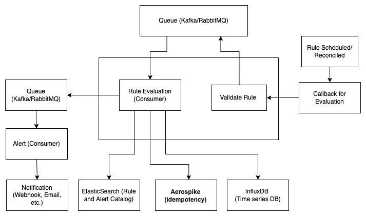
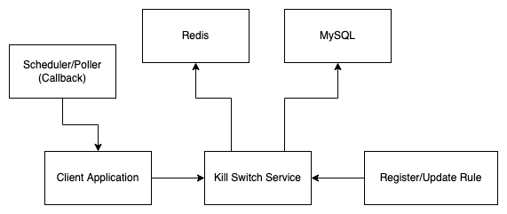

Anomaly Detection and Remediation
·
Code on the Road·
#Python
#Django
#Security 5 min read
5 min read
Expect the Unexpected
1. Introduction
The overview of the post is on building a system to detect potential anomalies and take immediate action(s). Hence primarily has two phases: Detect and Contain. However, the post discusses the use case to detect and contain anomalies as a generic implementation detail.
1.1. Two main components:
-
Anomaly Detection Service (Detect): Define rules to detect abnormal incidents.
-
Kill Switch Service (Contain): Prioritize and evaluate rules to switch the application behavior.
2. Anomaly Detection Service
Anomaly Detection service is an alerting framework for configuring alerts on top of any time series datastore.
2.1. Working Overview
Events from applications(s) are published and stored in a time-series data store. Predefined rules (absolute and relative) are evaluated at a fixed time interval and frequency to alert if any anomalies are detected.
2.2. Anomalies can be broadly categorized into two types:
-
Absolute Anomaly: is based on absolute data values; for example, an application receives a minimum of 400 payments every 30 minutes from 10 AM to 5 PM; anything below the minimum is considered an anomaly.
-
Relative Anomaly: is based on data values relative to the previous day/week/month; for example, a 25% or more decrease in the number of payments in a 30-minute time window(s) from 10 AM to 3 PM relative to the previous day(s) (on the same day and 30-minute window); i.e., if there were 200 payments from 3:00 PM to 3:30 PM yesterday and it’s less than 140 today (more than 25% decrease), it’s an anomaly.
2.3. Model
Presuming the data is being published to a time-series store, the different fields of a rule are as follows:
ID: A Unique Identifier.Query: To get the data for evaluation from the time-series data store.Anomaly rule-type: Absolute/Relative.Time window: Sliding window interval.Time Interval: From and to interval.Frequency: Frequency of rule evaluation (Every x seconds).Expiry/Validity: To decide whether to evaluate the rule or not.Content: Alert content (JSON or String).Receivers: Webhook, Email, etc.Status: Active/Inactive.
2.4. System Design
At this point, it’s clear that queries have to be executed within a defined time interval (from-to) and time window; furthermore, in the case of relative rules, current query results have to compare the results with historical data.
However, historical data is often archived and is not scalable to run a query every time the rule is evaluated, as certain critical systems may have frequent executions.
One possible solution is to use lazy loading: Store the results in ElasticSearch (Query result, time window/interval, rule ID, etc.) after evaluating the rule; thereby, for relative rules, the historical data values can be retrieved from ElasticSearch instead of querying the time-series datastore every time. Furthermore, having a pipeline to prefill historical data results into ElasticSearch further reduces the rule evaluation time.
When a rule is registered, for the time interval and widow, a scheduler is responsible for evaluating the rule at a predefined frequency. For instance, a rule has a 30-minute time window and a 10 AM to 3 PM time interval with a frequency of 10 minutes: in this case, the rule evaluations are 10-10:30, 10:10-10:40, 10:20-10:50, and so on.
Lastly, when the rule has to be evaluated, the scheduler publishes a message to the queue. Once the rule evaluation results in an alert, the alert message is pushed to another queue.
Hence, the different components involved are as follows:

Anomaly Detection Service System Design
- Key-value store (MongoDB):
- A catalog to store the rule(s) and alert(s) data required for rule evaluation and alerts (A better option: use ElasticSearch to search for rules from time interval and window - necessary for the reconciliation of rule registration).
- For idempotency - to ensure the same rule is not evaluated more than once under the same time window and keep track of previous evaluation(s) status.
-
Queue (RabbitMQ/Kafka): To queue rule evaluation and alert requests.
- Time-series data store (InfluxDB): Datastore for application events. Rules are evaluated by querying the data.
2.5. Conclusion
The applications of the Anomaly detector are endless as long as data is published to a time-series data store and have use cases across domains: abnormal queries on the database, frequency of APIs, usage of tools (Cloud Trail), change in user privileges, resource utilization spikes, and many more. The action items after detecting anomalies are open-ended, and lastly, the rule evaluation is not limited to a query on the time-series data store. The extension could be having an ML decision layer for the query data.
3. Kill Switch Service
2.1. Working Overview
The basic idea of the “kill-switch” is to take a JSON input and evaluate a set of rules on the input JSON and return the match result. After that, it’s up to the receiver to decide the action item; one go-to approach is to throw an exception with a custom status code and configure the client-side pages to display a relevant message such as “Temporarily blocked.”
For example: Let’s say there’s a workflow in the application where the purchase of an order is fulfilled, and HSBC bank is temporarily down, or there’s a bug identified; hence, to block such workflows, one would create a kill-switch rule which matches to True for PURCHASE workflow of HSBC bank.
- Predefined Rule:
WORKFLOW == "PURCHASE" and BANK == "HSBC" - JSON input:
{"WORKFLOW": "PURCHASE", "BANK": "HSBC"} - Output:
True
3.2. Model
The different fields of a rule are as follows:
ID: A Unique Identifier.Conditions: To evaluate the input JSON.Time Interval: From and to interval (Validity/Expiry of the rule).Frequency: Frequency of rule evaluation (Defaults to 30 seconds).Status: Active/Inactive.
3.3. System Design
While implementing a simple rule engine for the given JSON is relatively easy, the expectation is that most APIs in the backend application would need to call the Kill-switch service to evaluate. Hence, ensuring low latency is of a higher priority.
The kill-switch service can store the ruleset in a key-value cache-store such as Redis with a longer TTL and update the cache when the rules are expired or modified.
The application calling the kill-switch service still has to bear the network latency to make the API call, possibly for most backend APIs. Using another layer of Redis is a bad idea, given the TTL may have to be seconds. A better approach is to load the kill-switch rules relevant to the integrated application at run-time for a predefined frequency, using a scheduler + queue combination.
The barebone implementation of KS: https://github.com/addu390/kill-switch
The different components involved are as follows:

Kill Switch Service System Design
-
Data Store (MySQL): To validate and store the rule(s).
-
Queue (RabbitMQ/Kafka): (for Client application) Scheduler callback pushed to a queue to import the kill-switch rules (in-memory).
-
Key-value Cache (Redis): To cache the rules to facilitate low latency API calls.
3.4. Conclusion
The use-case(s) of the kill-switch service spans across domains. All it takes is a set of key-value pairs and rule(s) to validate the key-value pairs, followed by an action item in complete control of the client. Be it temporarily blocking a workflow, a set of users, a tool, or even resources. However, it’s important to use KS for its prime purpose and not force-fit to other use-cases like A/B testing.
Both the services (AD and KS) work independently and are stand-alone applications. But go hand-in-hand. For instance, activating a kill switch can be an action item of the anomaly detector.

Cite this article as: Adesh Nalpet Adimurthy. (Apr 17, 2022). Anomaly Detection and Remediation. PyBlog. https://www.pyblog.xyz/anomaly-detection-and-remediation
 #index
#index